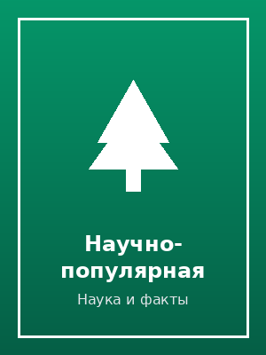

«Сентябрьский свет»
Семейная сага о трёх поколениях жителей одного дома у реки.
Фонд библиотеки разделён на несколько разделов. Ниже — подборки по самым популярным категориям, полный каталог доступен в электронном читальном зале.
Семейная сага о трёх поколениях жителей одного дома у реки.
История путешествия, которое меняет представление героя о доме.
Экипаж исследовательской станции сталкивается с сигналом из глубокого космоса.
Первая часть фэнтези-цикла о королевстве на границе вечной зимы.

Как работают привычные технологии — просто и без сложных формул.
Расследование в маленьком городе, где у каждого есть тайна.
Добрые сказки для чтения перед сном, для детей от 4 лет.
Аудиоспектакль по мотивам городской мистической повести.